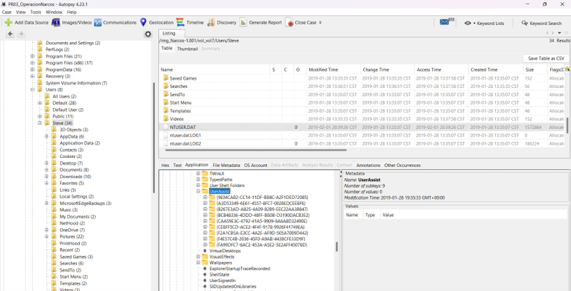
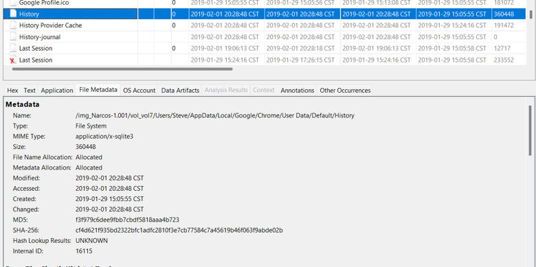
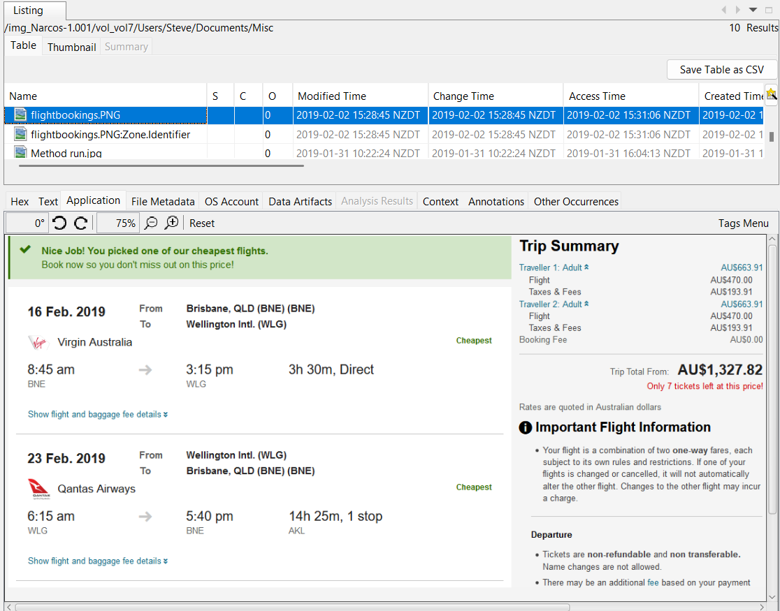
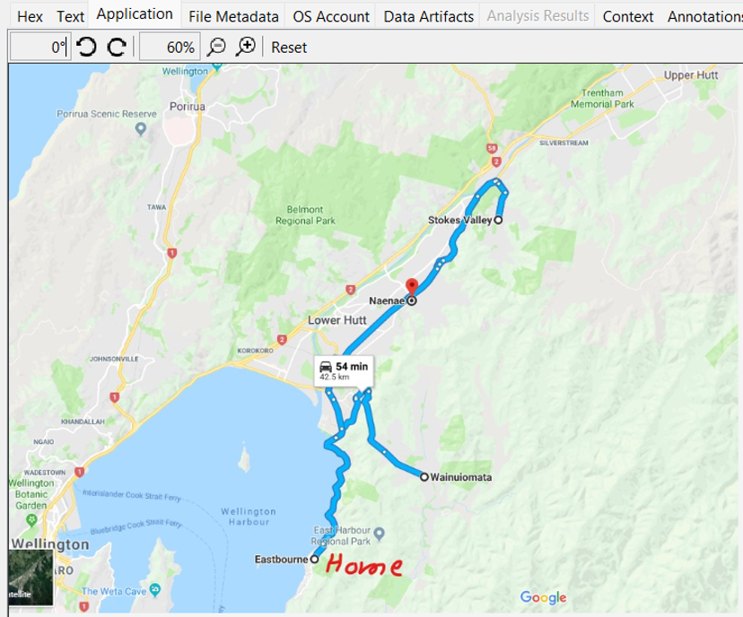
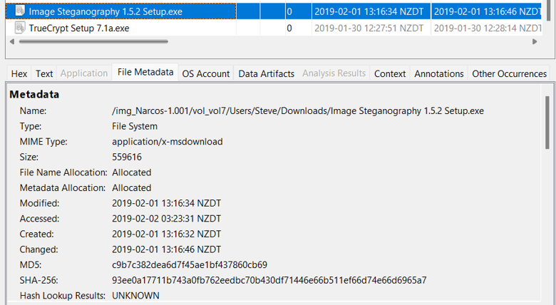
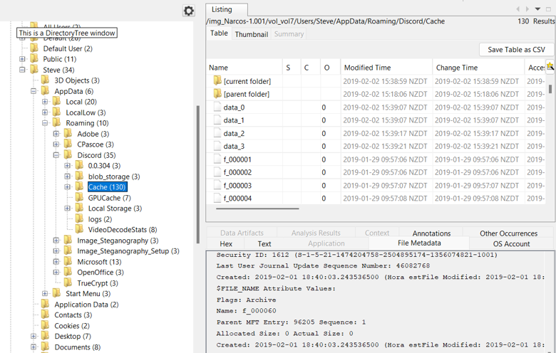

Parte I: Extracción e Identificación de Evidencia
Se reconstruyó la imagen forense dividida en 15 segmentos (Narcos1.zip.001 – .015) y se montó Narcos-1.001 en Autopsy configurando la visualización horaria en NZDT (UTC+13) para preservar la cronología local de los eventos.
1. Sistema Operativo, Registro y Navegación
- Sistema Operativo (P1): Windows 10 Pro (Build 17763 / versión 1809, arquitectura AMD64, equipo
SK-DESKTOP), extraído de los hivesSYSTEMySOFTWARE\Microsoft\Windows NT\CurrentVersion. - Perfil Principal (P2): Usuario
Steveubicado enC:\Users\Steve. - Clave UserAssist (P3):
C:\Users\Steve\NTUSER.DAT→Software\Microsoft\Windows\CurrentVersion\Explorer\UserAssist. Al alojarse enNTUSER.DAT(HKEY_CURRENT_USER), aísla la autoría a la sesión de Steve y registra ejecuciones interactivas en el shell (explorer.exe) con marcasFILETIMEy ofuscación ROT13. - Navegadores y Bases de Datos (P4 y P5):
• Google Chrome:C:\Users\Steve\AppData\Local\Google\Chrome\User Data\Default\History(SQLite). MD5:f3f979c6dee9fbb7cbdf5818aaa4b723.
• Internet Explorer / Edge:C:\Users\Steve\AppData\Local\Microsoft\Windows\WebCache\WebCacheV01.dat(base de datos ESE).

Fig 1: Identificación de Windows 10 Pro y clave UserAssist en NTUSER.DAT

Fig 2: Verificación de History (Chrome), WebCacheV01.dat y hash MD5
2. Documentos, Imágenes y Metadatos (NZDT)
- airport crystals.jpg (P6 y P7): Ubicado en
C:\Users\Steve\Documents\Misc\airport crystals.jpg. Creación registrada el 2019-01-31 10:25:18 NZDT. - dropoff.jpg (P8 y P9): Hash MD5
7feb763bebe42c3a3464c9ee3bb1d3e8. Última modificación: 2019-02-02 14:06:06 NZDT. Muestra captura de Google Maps de Eastbourne Library (38 Rimu St, Lower Hutt). - flightbookings.PNG (P10): Ubicado en
C:\Users\Steve\Documents\Misc\flightbookings.PNG. Cotización de vuelos para 2 adultos entre Brisbane (BNE) y Wellington (WLG) del 16 al 23 de febrero de 2019. - Method run.jpg (P11): Hash MD5
69b225bc0ef5a0c003f1e2a6646aaf92. Mapa de ruta vehicular de 54 min (42.5 km) desde Eastbourne (anotado en rojo como "Home") hacia Wainuiomata, Naenae y Stokes Valley.

Fig 3: Capturas flightbookings.PNG y dropoff.jpg (Eastbourne Library)

Fig 4: Ruta trazada en Method run.jpg con anotación "Home"
3. Programas de Ocultamiento y Artefactos de Actividad
- BNE.png (P12): Ubicado en
C:\Users\Steve\Downloads\Misc\BNE.png. MD5:dffa98bdd7371d1806adb09db27ba283(fotografía panorámica de Brisbane, Australia). - Esteganografía (P13):
Image Steganography 1.5.2 Setup.exeenC:\Users\Steve\Downloads\. MD5:c9b7c382dea6d7f45ae1bf437860cb69. - Cifrado (P14):
TrueCrypt Setup 7.1a.exeenC:\Users\Steve\Downloads\. - Discord y Windows Timeline (P15):
• Caché de Discord:C:\Users\Steve\AppData\Roaming\Discord\Cache(130 archivos activos hasta el 2019-02-02 15:39:21 NZDT).
• Windows Timeline:C:\Users\Steve\AppData\Local\ConnectedDevicesPlatform\2418c0082017486a\ActivitiesCache.db.

Fig 5: Instaladores de Image Steganography 1.5.2 y TrueCrypt 7.1a

Fig 6: Artefactos de Discord Cache y base de datos ActivitiesCache.db
Parte II: Investigación e Interpretación Forense
- Coincidencias Logísticas (P16):
flightbookings.PNG(2 adultos BNE → WLG el 16/02/2019),BNE.png(Brisbane) ydropoff.jpg(Biblioteca de Eastbourne) coinciden directamente con los dos pasajeros interceptados procedentes de Australia y el punto de entrega reportado. Límite: La captura muestra una cotización previa al pago, por lo que no prueba la compra desde ese equipo ni identifica nominativamente a los viajeros. - Correlación de Actividad (P17):
airport crystals.jpgyMethod run.jpgfueron creados el2019-01-31(10:21–10:25 NZDT) y abiertos nuevamente a las16:04:13 NZDT, quedando registrados enActivitiesCache.dbyRecent Docs. La marca "Home" en Eastbourne sugiere planeación de distribución local, aunque no confirma el desplazamiento físico sin datos GPS externos. - Actividad en Discord (P18): El instalador
DiscordSetup.exe, la carpeta enAppData\Roaming\Discordy 130 archivos de caché actualizados hasta el2019-02-02 15:39:21 NZDTprueban instalación y uso activo. Sin embargo, al alojarse los chats en servidores remotos, sin volcado de RAM o requerimiento legal no se puede confirmar el texto de las conversaciones ni la identidad real de los interlocutores. - Niveles de Evidencia en Esteganografía y Cifrado (P19):
• Descarga: Instaladores enDownloadsy registros en ChromeHistory.
• Instalación: Carpetas de configuraciónImage_Steganography,Image_Steganography_SetupyTrueCryptenAppData\Roaming.
• Ejecución: Contadores enUserAssist(NTUSER.DAT) y entradas enActivitiesCache.db.
• Uso efectivo: No confirmable sin hallar un volumen cifrado montado enSYSTEM\MountedDeviceso detectar mediante estegoanálisis carga oculta en archivos comoBNE.png.
Hipótesis del Caso y Explicación Alternativa (P20)
Hipótesis Principal: El equipo SK-DESKTOP funcionó como nodo de coordinación logística en Nueva Zelanda para recibir el cargamento procedente de Brisbane y distribuirlo en la zona de Eastbourne/Lower Hutt, sustentado por: (1) cotización de vuelos BNE–WLG, (2) mapa de la Biblioteca de Eastbourne, (3) ruta marcada como "Home" en Eastbourne abierta en Windows Timeline, y (4) actividad concurrente en Discord, TrueCrypt e Image Steganography.
Explicación Alternativa: Las herramientas de cifrado pudieron instalarse por privacidad o curiosidad técnica sin uso ilícito, y las imágenes corresponder a búsquedas turísticas o a un tercero con acceso físico al equipo.
Evidencias Adicionales Requeridas: (1) Volcado de memoria RAM volátil (para recuperar claves de TrueCrypt y chats en memoria); (2) Peritaje a los teléfonos móviles de John Fredricksen y Jane Esteban y registros financieros/aeroportuarios.
Referencias Bibliográficas
- Referencia Académica Obligatoria: Garfinkel, S., Farrell, P., Roussev, V., & Dinolt, G. (2009). Bringing Science to Digital Forensics with Standardized Forensic Corpora. Digital Forensic Research Workshop (DFRWS), Montreal, Canadá. https://simson.net/clips/academic/2009.DFRWS.Corpora.pdf
- Conjunto de Datos Utilizado: Digital Corpora. (2019). 2019 Narcos Scenario (Narcos-1 Disk Image) [Conjunto de datos]. Digital Corpora Forensics Datasets. https://digitalcorpora.org/corpora/scenarios/2019-narcos/
- Documentación Técnica: Microsoft Learn. (2023). Windows Registry information for advanced users. Microsoft Documentation.
- Referencia de Artefactos: SANS Institute. (2021). Windows Forensic Analysis Poster & Artifact Reference (FOR500). SANS DFIR.